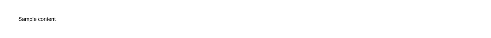

Submit button that shows a spinner, announces itself, and refuses to fire twice while an async action is in flight. Set loading={true} for the duration of the request and the button disables itself, so a second click cannot send the same request again; loadingText swaps the label for "Saving…" or "Charging card…" while it waits. It is the button for every action that has to go somewhere and come back: submit, save, publish, send, invite, apply, sign in, sign up, pay or check out, upload, export, retry, connect, delete in a confirmation dialog, and "generate" or "run" in an AI app. In practice the loading prop is wired straight to a state your data layer already has: isSubmitting from react-hook-form's formState, isPending from a TanStack Query useMutation or from React 19's useActionState, pending from useFormStatus inside a Next.js server action form, state !== "idle" from Remix or React Router's useNavigation, isMutating from SWR, isLoading from an RTK Query trigger — or a plain useState flag around an await fetch. Common asks it answers: "react button with loading spinner", "shadcn loading button", "button loading state react", "disable button while submitting", "prevent double submit react", "prevent duplicate form submission", "async submit button", "pending state button shadcn", "spinner inside button tailwind", "button spinner while awaiting fetch", "form submit loading state", "isPending button", "useFormStatus pending button", "useActionState loading button", "react-hook-form isSubmitting button", "tanstack query mutation loading button", "next.js server action loading button", "button aria-busy". Official shadcn/ui has no loading state anywhere in this path: its button ships no loading, pending or busy prop, and its spinner is a bare spinning icon with an aria-label — pairing them, disabling the button, and keeping the two in step is left to you, and doing it by hand is exactly where the double-submit bug comes from. This one carries aria-busy while pending, and the spinner it composes is pulld's, which puts the label in a role="status" polite live region rather than only on the icon, so the wait is announced instead of being a silent frozen button — and the label it announces is your loadingText, so "Charging card…" is what gets read out rather than a generic "Loading". Two things worth knowing before you drop it in a form: it defaults to type="button", so pass type="submit" explicitly when it submits a form (props are spread last, so your type wins), and disabling a focused button takes it out of the tab order — the live region is what carries the state to a screen reader once focus has moved. Within pulld it is the plain async button; confirm-button is the one that makes a destructive action be clicked twice, and type-to-confirm the one that makes it be typed out. The spinner atom installs with it through registryDependencies, it renders no client-side state of its own so it needs no "use client", and there is nothing else to add.

Rendered on the shadcn default neutral palette with harness-generated props.
pnpm dlx shadcn@4.21.0 add @pulld/loading-button
| licence | POINTER |
|---|---|
| primitive base | none |
| type | registry:ui |
| files | src/components/ui/loading-button.tsx |
| npm deps pulled | none beyond the pre-installed peer set |
| registry deps | https://pulld.pages.dev/r/spinner.json |
| semantic / palette / hex | 4 / 0 / 0 |
| writes shared ui/ | yes — can overwrite the project’s own primitives |